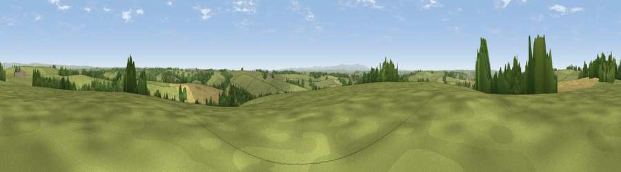

Viewpoint near Romansleigh
#19044 in England · top 27% of its area beats it · near RomansleighThe view, rendered

A 360° render of this exact spot computed from the terrain model, tree cover and land cover — summer colours, afternoon light, calibrated against photographs of famous viewpoints. Real trees, hedges and buildings will differ in detail.
The panorama
Grey silhouette: terrain skyline in each direction (720 bearings, Earth curvature and refraction included). Dashed green: skyline with trees (+15 m) and buildings (+8 m) as obstacles. Blue strip: how far the ground is visible on each bearing.
Where the view opens
Wedge length = distance to the farthest visible ground on that bearing (vegetation-aware). Rings at 10, 25 and 50 km.
What fills the view
75% grassland · 15% cropland · 10% woodland
Angular shares of the visible panorama (visual magnitude), not map area. Landscape diversity 0.32 (0–1 Shannon).
Key numbers
More beautiful places nearby
The staircase of upgrades: each row has a higher view potential than everything closer. Driving times are estimates from straight-line distance, calibrated against real road routing — check an actual route before setting out.
| Place | Direction | Drive | Score |
|---|---|---|---|
| Viewpoint near Romansleigh | N · 1 km | ~4 min | 59.6 |
| Viewpoint near Chulmleigh | WSW · 3 km | ~7 min | 62.4 |
| Viewpoint near George Nympton | NW · 5 km | ~10 min | 65.8 |
| Viewpoint near Burrington | W · 9 km | ~18 min | 66.4 |
| Viewpoint near Stags Head | NNW · 12 km | ~22 min | 68.1 |
| Yollacombe Hill | NW · 14 km | ~26 min | 70.2 |
| Viewpoint near Landkey | NW · 18 km | ~30 min | 74.0 |
| Codden Hill | NW · 19 km | ~32 min | 81.3 |
50.94071, -3.82072 · source: screening · position refined by local search. Computed location — check access rights before visiting.